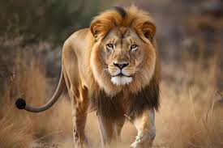

Elephants are the largest animals on land. They have a huge body with wide legs that look like pillars. Their tusks appear when they are around two years old. The tusks keep growing throughout their lives. They have thick skin that helps them maintain water in the body.
Lion

The lion has a long body, short legs, sharp claws, and a large head. Adult males are about 9 to 10 feet (2.7 to 3 meters) long, including the tail. They stand about 3 feet (1 meter) tall at the shoulder and can weigh 370 to 500 pounds (170 to 230 kilograms). Females are shorter and more slender.
Rhino
Rhinoceroses are universally recognized by their massive bodies, stumpy legs and either one or two dermal horns. In some species, the horns may be short or not obvious. They are renowned for having poor eyesight, but their senses of smell and hearing are well developed.
Crocodile
Crocodiles are among the largest reptiles in the world but can be very small in size in some others. They have a long snout. Crocodiles mostly live in water, but they can also be found on dry land. Crocodiles are cold-blooded reptiles with scaly skin.
Rabbit
A rabbit is a small mammal with long ears which can be seen in the fields which are close to the jungle. It has two long ears, two eyes, a nose, very sharp teeth, and four legs and also has soft fur on its body which keeps it warm during the winters and also protects for sun rays.